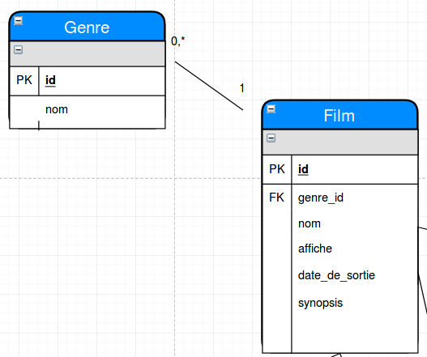
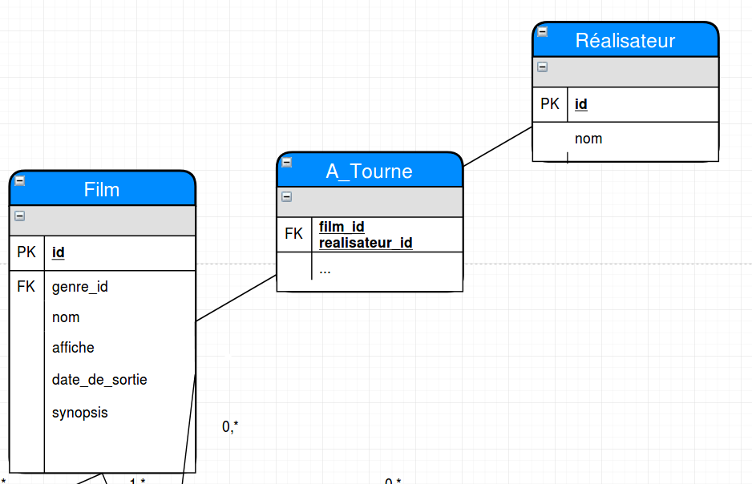

Créé par Erwann DUCLOS
La startup "Cineart" souhaite rivaliser les plateformes numériques actuelles telles que NETFLIX/Plex pour la création d'un media center national dedié au cinema indépendant français.
Chaque film référencé sur la plateforme affichera l'ensemble des acteurs principaux ainsi que les réalisateurs. Tout film disposera d'informations propres telles que son nom, son affiche, une date de sortie, un genre, un synopsis. Il sera possible de noter de 1 à 5 étoiles un film accompagné d'un avis (champ texte < 256 char). Plusieurs avis existeront pour chaque film. Il sera possible de définir de un à plusieurs "tags" pour chaque film. Il devra également être possible d'accéder aux informations propres des réalisateurs et/ou des acteurs. Les informations concernant ces personnes n'ont pas été définies, une veille concurentielle est à réaliser.

